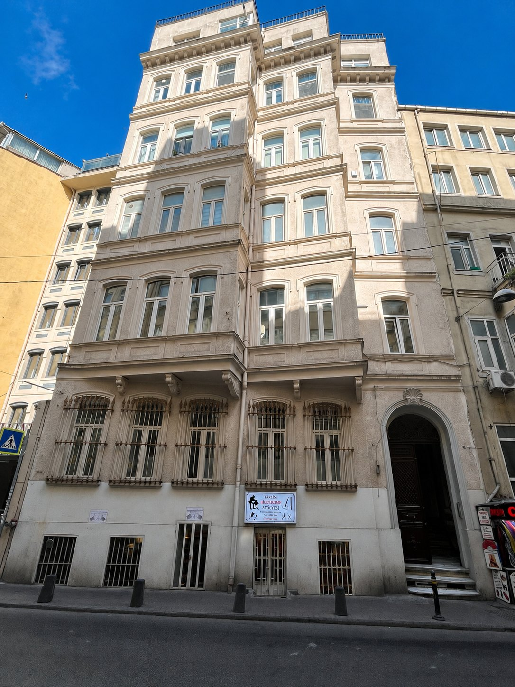
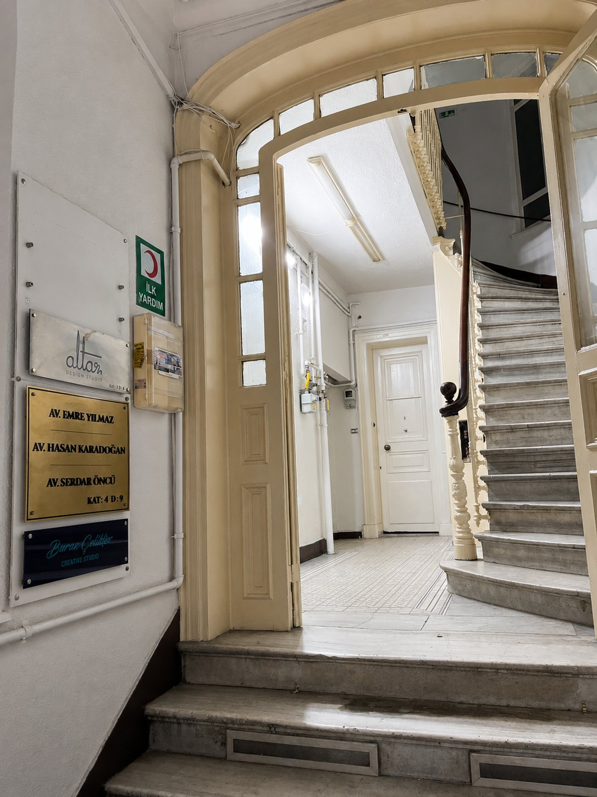
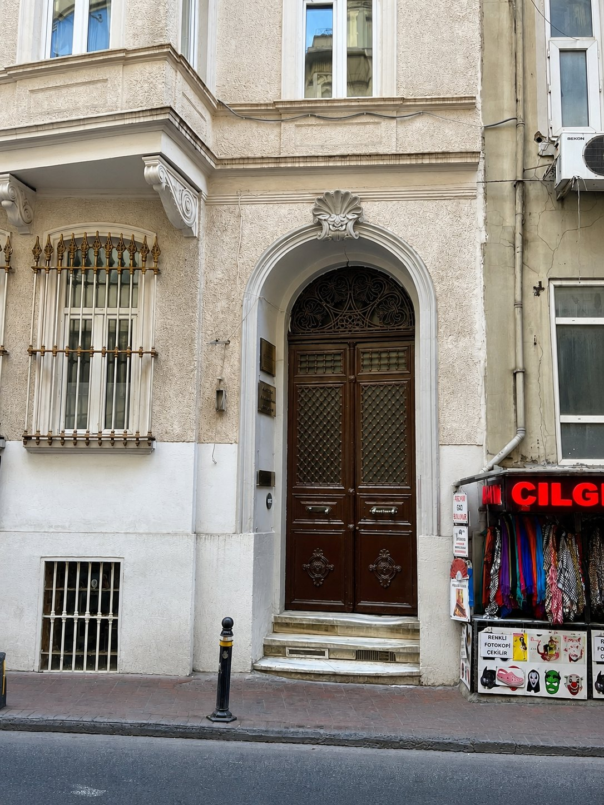

Aile ve Boşanma Hukuku
Boşanma, mal rejimi, nafaka, velayet ve aile hukukundan kaynaklanan uyuşmazlıklar.
Beyoğlu / İstanbul
Karadoğan Avukatlık Bürosu, İstanbul Beyoğlu’nda faaliyet gösteren butik bir hukuk bürosudur. Büro, her dosyanın kendi koşullarını dikkate alan planlı ve dikkatli bir çalışma yöntemi benimser.

Büro
Karadoğan Avukatlık Bürosu, dava takibi, hukuki danışmanlık, sözleşme süreçleri ve uyuşmazlık yönetimi alanlarında müvekkillerine hukuki destek sunar.
Büro çalışma anlayışında dosyanın hukuki niteliği, tarafların durumu, mevcut deliller ve sürecin olası riskleri birlikte değerlendirilir. Her dosya kendi koşulları içinde ele alınır.
İstanbul Beyoğlu’nda bulunan büro, randevu esaslı görüşmelerle faaliyet göstermektedir.



Faaliyet Alanları
Boşanma, mal rejimi, nafaka, velayet ve aile hukukundan kaynaklanan uyuşmazlıklar.
İşe iade, işçilik alacakları, fesih süreçleri ve işçi-işveren uyuşmazlıkları.
Şirket danışmanlığı, ticari sözleşmeler ve ticari uyuşmazlıkların takibi.
Alacakların tahsili, icra takipleri, itirazın iptali ve menfi tespit süreçleri.
Taşınmaz mülkiyeti, tapu iptali ve tescil, kira ve tahliye süreçleri.
Miras paylaşımı, ortaklığın giderilmesi ve muris muvazaası iddialarına ilişkin süreçler.
Ekibimiz
Karadoğan Avukatlık Bürosu kurucusudur. Dava takibi ve hukuki danışmanlık süreçlerinde müvekkillerine dosya özelinde planlı hukuki destek sunar.
Büro kadrosunda yer alan diğer çalışma arkadaşlarına ilişkin bilgiler, ilgili meslek kuralları gözetilerek güncellenecektir.
İletişim
Görüşmeler randevu esaslı yürütülmektedir. İletişim taleplerinizi e-posta üzerinden iletebilirsiniz.